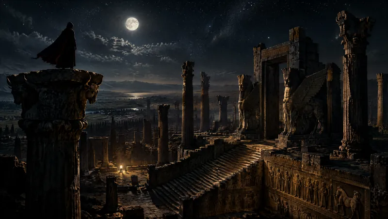
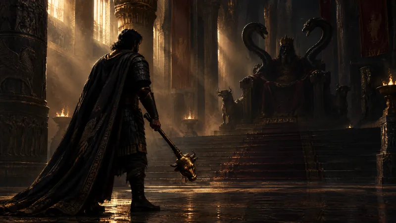

برای آزادی ایران بجنگید.
داخل ایران، اینجا نقشه میکشید و هیچکس نمیفهمه کی هستید. بیرون از ایران، شما صدایی هستید که دست رژیم بهش نمیرسه.
داخل ایران هستید؟ امن عضو بشید: یه اسم ساختگی، یه ایمیل که فقط برای همین ساختید، و فیلترشکن. من هیچوقت نمیپرسم کجا هستید. چطوری امن عضو بشید
برنامههای عمومی بیرون از ایران
تجمعها، نمایش فیلمها و مراسمهایی بیرون از ایران که از قبل عمومیان. برنامهتون رو بذارید، من اینجا و تو صفحهٔ اول نشونش میدم.
مأموریتهای شما
چهار قدم، به ترتیب: حسابتون رو بسازید، خبر جمع کنید، بیرون از ایران آدمهای مطمئن رو ببینید، و بعد جلودار بشید.
تا حالا ۱۷ نفر اینجا حرفشون رو زدن.




تو واشینگتن کی با شماست
هر ۵۳۹ عضو کنگرهٔ آمریکا، هر کدوم با یه نمره از ۱۰۰، از روی رأیها و حرفهای خودشون. چطور نمره میدم
ایرانیها همین الان اینجا دارن بحث میکنن. حق با کیه؟
همینجا بگید تا بقیه هم جوابتون رو بدن؛ فارسی یا انگلیسی.
گفتوگو
همهٔ گفتوگوها
همهٔ گفتوگوهای سایت یه جا: جدیدترها بالاتر، فارسی و انگلیسی کنار هم. روی اسم بالای هر نظر بزنید تا صفحهش باز بشه. اینا حرف خود خوانندههاست، نه حرف من.
اطلاعات خصوصی هیچکس رو ننویسید. قوانین گفتوگو و اطلاعاتی که از شما نگه میدارم
بیاید حرف بزنیم
برنامه هر روز تو یوتیوب زنده پخش میشه، و کسایی که میبیننش بین برنامهها تو دیسکورد با هم نقشه میکشن.